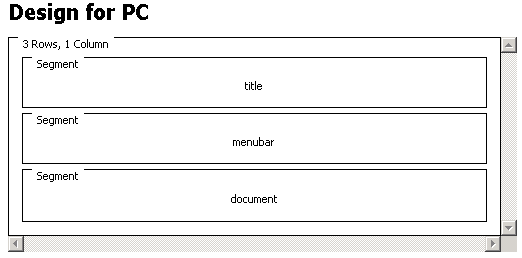

In a montage layout you can use segments or frames to position the output from multiple canvasses on a device. You should use montage layouts for large-screen devices, ideally for those that support frames.
The figure shows how a simple montage layout appears in the Layout editor's Design page.The grid format consists of three rows, each of which contains a segment. The top row displays a title and images for the web site, The middle row holds a site menu. The bottom row contains canvasses selected in the menu segment.

As in all layouts, each segment must have a unique name that you use to specify where output from the canvasses appears.
Each segment has attributes associated with it. These attributes can affect the formatting that is applied as the page is generated. Frame and segment attributes set values for frame margins, determine whether you can resize a frame or scroll its content, and so on.
Related information
About layouts